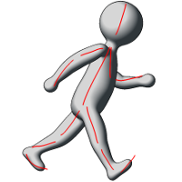
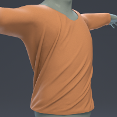
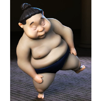
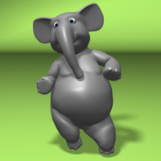
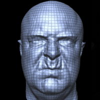

About Me
Hello and welcome to my personal web site. My name is Fabian Hahn and I am currently a Software Engineer at Improbable, a tech startup in central London. Before moving to the UK and joining Improbable, I was pursuing a PhD in Computer Graphics at ETH Zurich in Switzerland, where I had also completed a BSc in Computer Science in 2010, and a MSc in Computer Science in 2012. I successfully defended my dissertation Optimization Methods for Character Animation using Rig Spaces in September 2015.
Feel free to contact me at fabian [at] hahn [dot] graphics.
Computer Graphics Research
During my PhD, I was a member of both:
- The Computer Graphics Lab, being part of the Department of Computer Science (D-INFK) at ETH Zurich
- The Animation Group at Disney Research Zurich
My principal advisor was Prof. Dr. Bob Sumner, and I was co-advised by Prof. Dr. Markus Gross. Further, Dr. Tony DeRose served as a co-examinor for my final PhD examination.
Research topics
During the course of my PhD studies, I was interested in bridging the gap between physical simulation and artist-created character simulation. In particular, my goal was to find ways to integrate simulation methods such as FEM into the typical pipeline employed for character animation in movie and game production, while retaining full control of the result for the artist.
Publications
|  |
Sketch Abstractions for Character PosingF. Hahn, F. Mutzel, S. Coros, B. Thomaszewski, M. Nitti, M. Gross, R. Sumner – ACM SIGGRAPH/Eurographics SCA '15We propose a sketch-based posing system for rigged 3D characters that allows artists to create custom sketch abstractions on top of a character's actual shape. [Website] [ACM] |
|  |
Subspace Clothing Simulation Using Adaptive BasesF. Hahn, B. Thomaszewski, S. Coros, R. Sumner, F. Cole, M. Meyer, T. DeRose, M. Gross – ACM SIGGRAPH '14We present a new approach to clothing simulation using low-dimensional linear subspaces with adaptive bases. [Website] [PDF] [Video] [ACM] |
|  |
Efficient Simulation of Secondary Motion in Rig-SpaceF. Hahn, B. Thomaszewski, S. Coros, R. Sumner, M. Gross – ACM SIGGRAPH/Eurographics SCA '13We present an efficient method for augmenting keyframed character animations with physically-simulated secondary motion. Our method achieves a performance improvement of one to two orders of magnitude over previous work without compromising on quality. [Website] [PDF] [Video] [ACM] |
|  |
Rig-Space PhysicsF. Hahn, S. Martin, B. Thomaszewski, R. Sumner, S. Coros, M. Gross – ACM SIGGRAPH ’12We present a method for animating rigged characters that simulates the dynamics of a character in the sub-space of deformations described by an arbitrary rig. [Website] [PDF] [Video] [ACM] |
|  |
High-Quality Passive Facial Performance Capture using Anchor FramesT. Beeler, F. Hahn, D. Bradley, B. Bickel, P Beardsley, C. Gotsman, R. Sumner, M. Gross – ACM SIGGRAPH ’11We present a new technique for high-quality facial performance capture that leverages the repetitive structure of face motions to automatically locate frames with similar expressions, called anchor frames. High-resolution geometry is reconstructed and temporal motion is propagated in parallel using robust image-space matching between the anchor frames. [Website] [PDF] [Video] [ACM] |